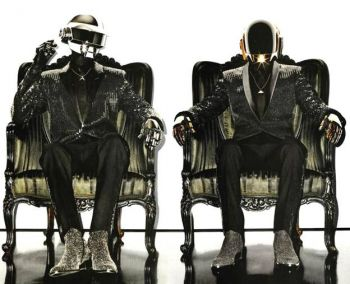

|

Электронная танцевальная музыка (другие названия: техно-музыка,клубная музыка; англ. EDM — Electronic Dance Music) представляет собой широкий спектр жанров и стилей электронной музыки, направленных, в первую очередь, для развлекательной индустрии. EDM является основой музыкального сопровождения для ночных клубов и фестивалей электронной музыки. EDM, как правило, используется в контексте живого воспроизведения, где диджей проигрывает заранее подготовленный список произведений, плавно переходя от одного к другому.
История:
Примером ранней формы EDM является результат сотрудничества между продюсером Giorgio Moroder и вокалисткой Донной Саммер — песня «I Feel Love», написанная в 1977 году. Песня была написана без использования традиционных инструментов и носила танцевальный характер.
Однако сам термин EDM впервые был употреблен в американской музыкальной индустрии лишь в 2010 году.
Развитие направления тесно связано с развитием компьютерных технологий, появлением новых инструментов для создания музыки, таких как драм-машина, секвенсор, микшер и многие другие. И расцветом в начале XXI века новых жанров электронной музыки, таких как дабстеп и трэп.
|